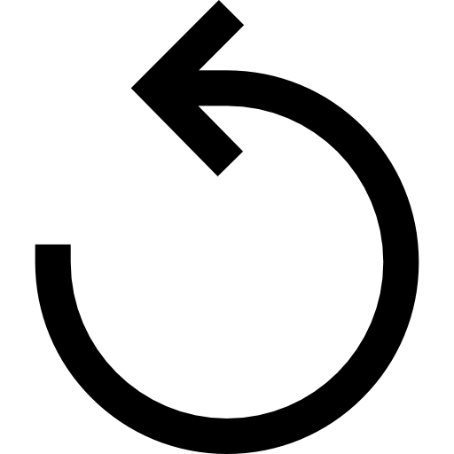

<div id="timer-container" class="timer-container">
  <div class="timer-main">
    <div class="timer-circle">
      <div class="timer-counter">
        <input id="timer-counter-hour" (change)="onCounterChange($event)" [value]="hour" class="timer-input" type="number">:
        <input id="timer-counter-minute" (change)="onCounterChange($event)" [value]="minute" class="timer-input" type="number">:
        <input id="timer-counter-second" (change)="onCounterChange($event)" [value]="second" class="timer-input" type="number">
      </div>
      <button (click)="onResetCounter()" class="timer-reload-btn">
        
      </button>
    </div>
  </div>
  <div class="timer-adders">
    <div class="adder-container" *ngFor="let adder of adders">
      <button (click)="onAddMount($event)" class="adder-btn">+{{ adder.amount }}</button>
      {{ adder.property.slice(0, 3) }}
    </div>
  </div>
  <div class="timer-footer">
    <div *ngIf="optionBtnIndex === 0" class="timer-option show">
      <button class="timer-btn blue" (click)="startCounter()">Start</button>
    </div>
    
    <div *ngIf="optionBtnIndex === 1" class="timer-option">
      <button class="timer-btn" (click)="stopCounter()">Pause</button>
      <div class="timer-line"></div>
      <button class="timer-btn" (click)="onResetCounter()">Reset</button>
    </div>

    <div *ngIf="optionBtnIndex === 2" class="timer-option">
      <button class="timer-btn blue" (click)="continueCounter()">
        Resume
      </button>
      <div class="timer-line"></div>
      <button class="timer-btn" (click)="onResetCounter()">Reset</button>
    </div>

    <div *ngIf="optionBtnIndex === 3" class="timer-option">
      <button class="timer-btn red" (click)="stopAlarm()">
        Reset
      </button>
    </div>
  </div>
</div>
